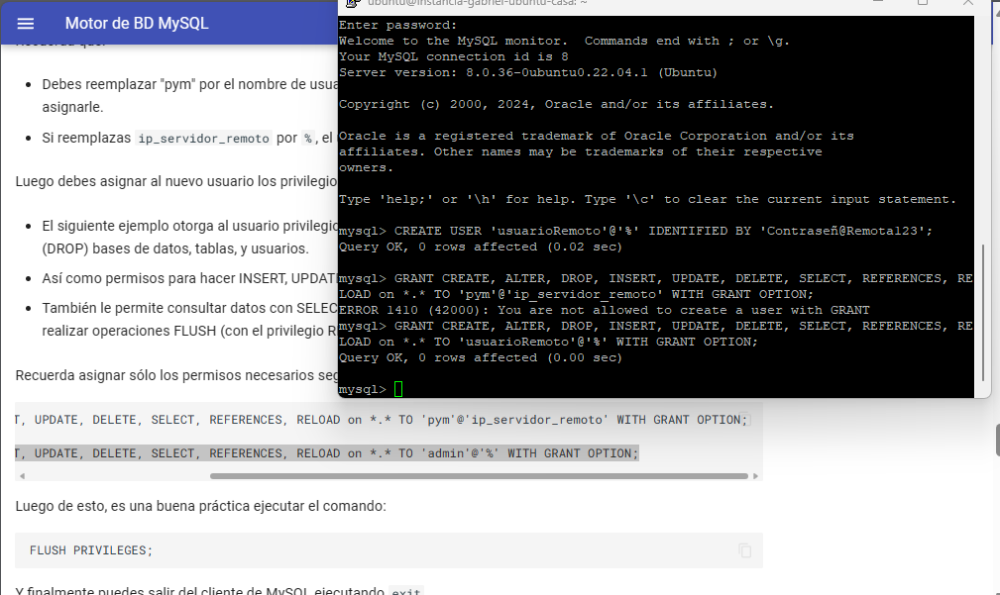

Configuración MySQL en Linux Con Apache
Paso 1: Instalar PHP 8
Paso 2: Crear archivo info.php con el comando nano de Linux
Paso 3: Instalar MySQL
Esto se hace con los comandos sudo apt install mysql-server y sudo mysql_secure_installation. Luego creamos un usuario con el comando sudo mysql ALTER USER 'root'@'localhost' IDENTIFIED WITH mysql_native_password BY 'password'; exit. Por último, entramos a MySQL con mysql -u root -p. Nos pedirá la contraseña.
Paso 4: Instalar herramientas necesarias de PHP
Ejecutamos el comando sudo apt install phpmyadmin php-mbstring php-zip php-gd php-json php-curl y seguimos el proceso de la guía. Luego entramos en (ip)/phpmyadmin.
Y podremos entrar con nuestro usuario ROOT
HABILITAR CONEXIÓN REMOTA A MYSQL
